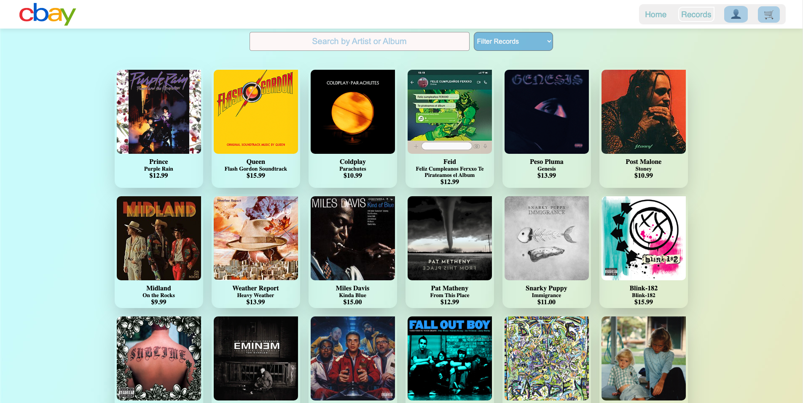
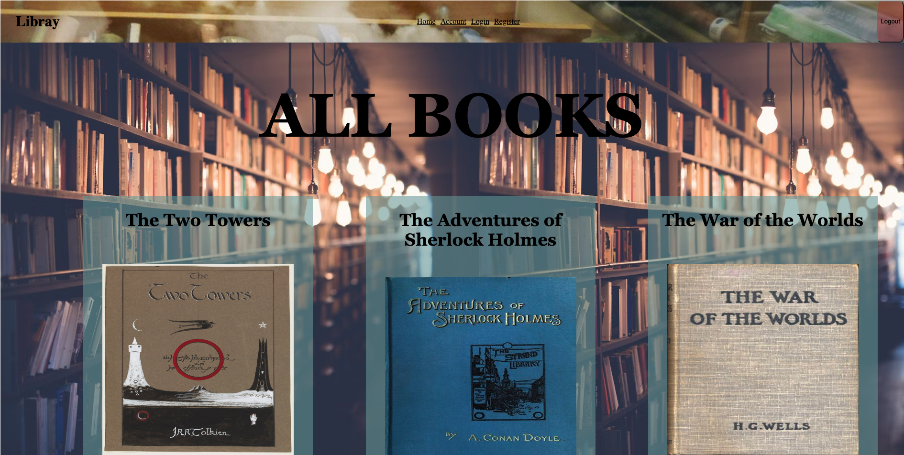
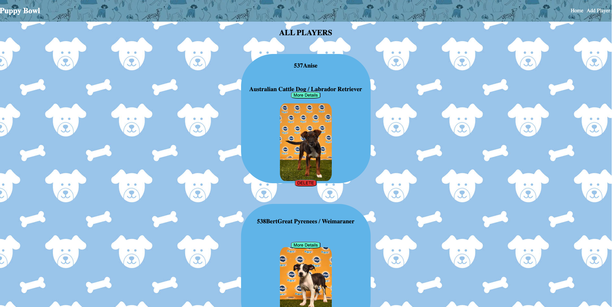

Things I've built, in no particular order
Cbay

Collaborated with other developers to build a full-stack E-commerce
store. In this store we sell music records. The name Cbay was
inspired from eBay, as a funny parody since we were called group-C
in our cohort with full-stack academy. This was our capstone project
presented for graduation. As a group we came up with the idea of a
music store so we could all add a part of us to it. In this store
users can login to their account or register. We implemented a guest
feature if users don’t want to sign up. Also, we have admin access
that will let them view all the users on the website, add and delete
records. Finally, another key feature we have is a fully functioning
cart that mimics a real transaction. Programs we used include
PostgreSQL, Node, JavaScript (React).
Book Buddy

Designed and created a whole front-end for a library using the CRUD method.
When you open the site you can view all the books that are currently available to check out.
Users can click on books that catch their attention to view more details about it to see if it’s something they want to get.
Then, users can then login or register in order to add those books to their reserve list.
In their reserve list they add more books, delete books, or make any updates they want to before checking out.
Key technologies used in this project include React, CSS, and Express.
Puppy Bowl

Designed and created a whole front-end for a competition using the CRUD method.
This website was created to manage the data for people to view the puppy competitors and their owners.
You can view all the players in the homepage, view more details, or delete a player.
In the header, you can add a new player to the list if you want to add more competition.
If any information inputted is incorrect we can always adjust it.
Key technologies used in this project include React, CSS, and Express.